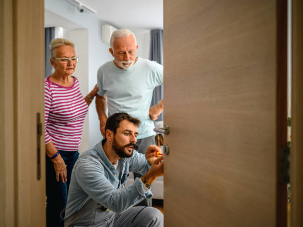

Serrurier Paris 24h/24 - prix annoncé avant travaux
Serrurier à Paris pour porte claquée, serrure bloquée et cylindre
Porte refermée, trousseau resté côté logement, serrure qui force ou cylindre à remplacer : un serrurier intervient dans Paris avec une méthode claire, un devis avant intervention et une ouverture sans casse quand la porte le permet.
Ouverture porte claquée 75€
Devis avant remplacement
Intervention 7j/7

Porte claquée75€si non verrouillée
Ouverture de porte claquée à Paris : le dépannage le plus demandé
Une porte claquée n'est pas une porte fermée à clé. Cette différence évite beaucoup de remplacements inutiles.
Porte claquée : agir sur le pêne, pas sur toute la serrure
Quand la porte s'est simplement rabattue, seul le pêne demi-tour retient l'ouverture. Le cylindre n'a pas tourné, la serrure principale n'est pas verrouillée et l'objectif est d'ouvrir sans percer.
Le tarif de 75€ concerne ce cas précis : porte non verrouillée, accès normal, serrure qui n'a pas été forcée. Si la porte est blindée, verrouillée à clé ou équipée d'une fermeture automatique, le serrurier annonce un devis adapté avant de commencer.
Après ouverture, la serrure est testée
Une fois la porte ouverte, le pêne, la poignée, la gâche et le cylindre sont contrôlés. Si tout fonctionne, la serrure reste en place.
Le remplacement n'est proposé qu'en cas de défaut réel : clé dure, cylindre instable, mécanisme bloqué, tentative d'effraction ou fermeture qui ne tient plus correctement.
Une intervention rangée, du premier appel au contrôle final
Vous décrivez la porte
Porte claquée, porte refermée, porte fermée à clé, serrure bloquée ou clé cassée.
Le prix est cadré
Le tarif de base ou le devis estimatif est annoncé avant le déplacement.
Le serrurier intervient
La méthode la moins destructive est privilégiée lorsque la porte le permet.
La fermeture est vérifiée
La porte est testée pour éviter un nouveau blocage après l'intervention.
Serrurier à Paris : urgence, méthode et prix annoncé avant travaux
Un dépannage serrurier sérieux ne se limite pas à ouvrir une porte. Il commence par comprendre la situation, choisir la méthode la moins destructive et vous annoncer le prix avant d'agir.
Une urgence, plusieurs situations possibles
À Paris, beaucoup d'appels commencent par la même phrase : “je suis bloqué devant ma porte”. Pourtant, derrière cette urgence, les cas sont très différents. Une porte simplement claquée ne demande pas le même travail qu'une porte fermée à clé, qu'une serrure multipoints bloquée ou qu'une clé cassée dans le cylindre.
Le serrurier doit donc poser les bonnes questions avant de se déplacer : la clé a-t-elle tourné ? Les clés sont-elles visibles à l'intérieur ? La porte est-elle blindée ? La serrure forçait-elle déjà depuis plusieurs jours ? Ces réponses évitent les erreurs, les outils mal adaptés et les remplacements inutiles.
Une intervention propre consiste à traiter le problème réel. Si la porte est simplement claquée, on cherche à libérer le pêne demi-tour. Si la porte est verrouillée, on analyse le cylindre et les points de fermeture. Si la clé est cassée, on vérifie d'abord si l'extraction est possible. Cette méthode protège votre porte et votre budget.
Pourquoi la porte claquée coûte moins cher qu'une porte verrouillée
Quand une porte se claque, le cylindre n'a pas tourné. Le mécanisme principal de verrouillage n'est pas engagé. Dans des conditions normales, le serrurier peut donc agir sur le pêne sans percer le barillet ni remplacer la serrure. C'est pour cette raison que l'ouverture d'une porte claquée peut être proposée à partir de 75€.
Ce tarif suppose une porte non verrouillée, accessible normalement, sans fermeture automatique engagée et sans tentative de forçage préalable. Si la porte est blindée, si plusieurs points se sont verrouillés ou si le cylindre est endommagé, le dépannage sort du cas simple. Le serrurier doit alors annoncer un devis adapté avant de commencer.
La différence est importante : une porte claquée est un problème d'accès, une porte fermée à clé est un problème de verrouillage. Les confondre conduit souvent à des incompréhensions sur le prix. Une page claire doit expliquer cette nuance, car c'est elle qui protège le client des mauvaises surprises.
Serrure bloquée, clé cassée, cylindre dur : ne forcez pas
Une serrure ne se bloque presque jamais par hasard. Elle donne souvent des signes avant la panne complète.
Les signes avant le blocage
Une clé qui accroche, une poignée qui devient molle, un cylindre qui tourne difficilement ou une porte qui frotte contre la gâche sont des signaux à prendre au sérieux. Continuer à forcer peut casser la clé dans le barillet ou bloquer le pêne dans le cadre.
Dans ce cas, le serrurier commence par identifier la cause : cylindre usé, serrure encrassée, pêne coincé, gâche décalée, porte qui a bougé avec le temps ou mécanisme multipoints fatigué. Le remplacement complet n'est pas automatique. Un réglage, une extraction de clé ou un changement de cylindre peut suffire.
La clé cassée demande aussi de la précision. Il faut éviter de pousser le morceau plus loin avec un objet métallique. Si l'extraction est possible, la serrure peut parfois être conservée. Si le cylindre est trop abîmé, son remplacement devient plus sûr qu'une réparation approximative.
Changer le cylindre sans changer toute la serrure
Le cylindre est la pièce qui reçoit la clé. Le remplacer permet souvent de sécuriser un accès sans changer toute la serrure. C'est utile après une perte de clés, un vol, un emménagement, un départ de locataire ou un doute sur le nombre de doubles en circulation.
Le choix du cylindre dépend de la porte, de l'épaisseur, du profil de serrure et du niveau de sécurité souhaité. Un modèle mal adapté peut dépasser, gêner la fermeture ou créer un point faible. Un bon serrurier vérifie la compatibilité avant la pose, puis teste l'ouverture et la fermeture depuis l'intérieur et l'extérieur.
Dans certains cas, la serrure complète doit être remplacée : mécanisme fracturé, tentative d'effraction, serrure ancienne devenue trop faible, multipoints bloqué ou porte qui ne ferme plus correctement. Mais cette décision doit être justifiée par un défaut visible ou mesurable, pas imposée après une simple ouverture de porte.
Porte blindée, serrure multipoints et sécurisation après incident
Les portes renforcées demandent une lecture plus complète du mécanisme avant toute intervention.
Une fermeture renforcée ne se traite pas comme une porte simple
Une serrure multipoints peut engager plusieurs pênes en haut, au centre et en bas de la porte. Si un seul point reste bloqué, toute la porte peut résister. Agir uniquement sur le cylindre n'est pas toujours suffisant, surtout si le problème vient de l'alignement ou du mécanisme interne.
Une porte blindée peut également être équipée d'un cylindre haute sécurité, d'une rosace de protection, d'un système anti-arrachement ou d'une fermeture automatique. Le serrurier doit vérifier la configuration avant de choisir la méthode. C'est ce qui justifie un devis différent d'une porte simplement claquée.
Le but reste le même : ouvrir sans dégâts quand c'est possible, réparer ce qui doit l'être et éviter les remplacements non nécessaires. Sur une fermeture renforcée, la précision compte plus que la vitesse apparente.
Après perte de clés ou tentative d'effraction
Après une perte de clés, la question n'est pas seulement d'ouvrir la porte. Il faut savoir si le trousseau peut être relié à votre adresse. Si c'est le cas, changer le cylindre permet de reprendre le contrôle de l'accès immédiatement.
Après une tentative d'effraction, même si la porte n'a pas cédé, le cylindre ou la serrure peuvent être fragilisés. Des traces de forçage, une clé qui ne rentre plus correctement ou une fermeture qui accroche doivent être contrôlées. Une sécurisation provisoire peut être mise en place si la réparation complète doit attendre une pièce adaptée.
Le devis doit distinguer ce qui relève de l'urgence et ce qui peut être programmé : ouverture, fermeture provisoire, changement de cylindre, remplacement de serrure ou renfort de porte. Cette distinction rend l'intervention plus claire et plus juste.
Dépannage serrurier à Paris : les situations prises en charge
Chaque problème de serrure demande une réponse différente. La page d'accueil vous oriente vers le bon dépannage sans mélanger les cas.
Ouverture porte claquée
La porte s'est refermée sans tour de clé. Ouverture à partir de 75€ si elle est simplement claquée, non verrouillée et accessible normalement.
Voir les pages porte claquée
Porte fermée à clé
La clé a tourné ou plusieurs points sont engagés. Le cylindre, le pêne et les points de fermeture sont analysés avant devis.
Voir porte fermée à clé
Cylindre et serrure bloquée
Clé cassée, barillet dur, serrure qui accroche ou poignée molle : le diagnostic détermine si un réglage, une extraction ou un remplacement est utile.
Voir serrurier par arrondissement
Porte blindée et multipoints
Une fermeture renforcée demande une méthode précise. Le devis dépend du cylindre, du système multipoints et de l'état du mécanisme.
Demander un devisTarifs serrurier Paris : comprendre ce qui change le prix
Le prix dépend moins de l'arrondissement que du verrouillage réel de la porte et de l'état de la serrure.
Porte claquée
à partir de 75€Uniquement si la porte est non verrouillée, accessible normalement et sans casse existante.
Porte fermée à clé
devis avant travauxLe cylindre et les points de fermeture doivent être analysés avant intervention.
Changement cylindre
selon modèleAprès perte de clés, emménagement, vol ou cylindre devenu trop dur.
Serrure bloquée
après diagnosticClé cassée, pêne coincé, gâche décalée ou mécanisme usé.

Comment éviter les mauvaises surprises avec un serrurier à Paris
Avant de valider un dépannage, demandez toujours le prix pour votre situation exacte. Une porte claquée standard ne coûte pas le même prix qu'une porte fermée à clé, une serrure multipoints ou un cylindre haute sécurité.
Un serrurier sérieux annonce la méthode, explique ce qui peut faire varier le tarif et ne remplace pas une serrure fonctionnelle. La facture doit détailler la main-d'œuvre, les pièces éventuelles et les coordonnées de l'entreprise.
Prix avant déplacement
Pas de pièce imposée
Facture détaillée
Serrurier Paris par arrondissement et par situation
Paris reste affiché en premier. Les autres zones sont regroupées à la fin pour garder une navigation claire.
Serrurier à proximité
Serrurier proche Paris 1erSerrurier proche Paris 2eSerrurier proche Paris 3eSerrurier proche Paris 4eSerrurier proche Paris 5eSerrurier proche Paris 6eSerrurier proche Paris 7eSerrurier proche Paris 8eSerrurier proche Paris 9eSerrurier proche Paris 10eSerrurier proche Paris 11eSerrurier proche Paris 12eSerrurier proche Paris 13eSerrurier proche Paris 14eSerrurier proche Paris 15eSerrurier proche Paris 16eSerrurier proche Paris 17eSerrurier proche Paris 18eSerrurier proche Paris 19eSerrurier proche Paris 20e
Serrurier Paris
Serrurier Paris 1erSerrurier Paris 2eSerrurier Paris 3eSerrurier Paris 4eSerrurier Paris 5eSerrurier Paris 6eSerrurier Paris 7eSerrurier Paris 8eSerrurier Paris 9eSerrurier Paris 10eSerrurier Paris 11eSerrurier Paris 12eSerrurier Paris 13eSerrurier Paris 14eSerrurier Paris 15eSerrurier Paris 16eSerrurier Paris 17eSerrurier Paris 18eSerrurier Paris 19eSerrurier Paris 20e
Ouverture porte claquée
Porte claquée Paris 1erPorte claquée Paris 2ePorte claquée Paris 3ePorte claquée Paris 4ePorte claquée Paris 5ePorte claquée Paris 6ePorte claquée Paris 7ePorte claquée Paris 8ePorte claquée Paris 9ePorte claquée Paris 10ePorte claquée Paris 11ePorte claquée Paris 12ePorte claquée Paris 13ePorte claquée Paris 14ePorte claquée Paris 15ePorte claquée Paris 16ePorte claquée Paris 17ePorte claquée Paris 18ePorte claquée Paris 19ePorte claquée Paris 20e
Porte refermée
Ouverture de porte Paris 1erOuverture de porte Paris 2eOuverture de porte Paris 3eOuverture de porte Paris 4eOuverture de porte Paris 5eOuverture de porte Paris 6eOuverture de porte Paris 7eOuverture de porte Paris 8eOuverture de porte Paris 9eOuverture de porte Paris 10eOuverture de porte Paris 11eOuverture de porte Paris 12eOuverture de porte Paris 13eOuverture de porte Paris 14eOuverture de porte Paris 15eOuverture de porte Paris 16eOuverture de porte Paris 17eOuverture de porte Paris 18eOuverture de porte Paris 19eOuverture de porte Paris 20e
Serrure porte blindée
Serrure porte blindée Paris 1erSerrure porte blindée Paris 2eSerrure porte blindée Paris 3eSerrure porte blindée Paris 4eSerrure porte blindée Paris 5eSerrure porte blindée Paris 6eSerrure porte blindée Paris 7eSerrure porte blindée Paris 8eSerrure porte blindée Paris 9eSerrure porte blindée Paris 10eSerrure porte blindée Paris 11eSerrure porte blindée Paris 12eSerrure porte blindée Paris 13eSerrure porte blindée Paris 14eSerrure porte blindée Paris 15eSerrure porte blindée Paris 16eSerrure porte blindée Paris 17eSerrure porte blindée Paris 18eSerrure porte blindée Paris 19eSerrure porte blindée Paris 20e
Serrure 3 points
Serrure 3 points Paris 1erSerrure 3 points Paris 2eSerrure 3 points Paris 3eSerrure 3 points Paris 4eSerrure 3 points Paris 5eSerrure 3 points Paris 6eSerrure 3 points Paris 7eSerrure 3 points Paris 8eSerrure 3 points Paris 9eSerrure 3 points Paris 10eSerrure 3 points Paris 11eSerrure 3 points Paris 12eSerrure 3 points Paris 13eSerrure 3 points Paris 14eSerrure 3 points Paris 15eSerrure 3 points Paris 16eSerrure 3 points Paris 17eSerrure 3 points Paris 18eSerrure 3 points Paris 19eSerrure 3 points Paris 20e
Changement serrure
Changement serrure Paris 1erChangement serrure Paris 2eChangement serrure Paris 3eChangement serrure Paris 4eChangement serrure Paris 5eChangement serrure Paris 6eChangement serrure Paris 7eChangement serrure Paris 8eChangement serrure Paris 9eChangement serrure Paris 10eChangement serrure Paris 11eChangement serrure Paris 12eChangement serrure Paris 13eChangement serrure Paris 14eChangement serrure Paris 15eChangement serrure Paris 16eChangement serrure Paris 17eChangement serrure Paris 18eChangement serrure Paris 19eChangement serrure Paris 20e
Clé bloquée serrure
Clé bloquée Paris 1erClé bloquée Paris 2eClé bloquée Paris 3eClé bloquée Paris 4eClé bloquée Paris 5eClé bloquée Paris 6eClé bloquée Paris 7eClé bloquée Paris 8eClé bloquée Paris 9eClé bloquée Paris 10eClé bloquée Paris 11eClé bloquée Paris 12eClé bloquée Paris 13eClé bloquée Paris 14eClé bloquée Paris 15eClé bloquée Paris 16eClé bloquée Paris 17eClé bloquée Paris 18eClé bloquée Paris 19eClé bloquée Paris 20e
Prix serrurier
Tarifs serrurier ParisPrix serrurier Paris 1erPrix serrurier Paris 2ePrix serrurier Paris 3ePrix serrurier Paris 4ePrix serrurier Paris 5ePrix serrurier Paris 6ePrix serrurier Paris 7ePrix serrurier Paris 8ePrix serrurier Paris 9ePrix serrurier Paris 10ePrix serrurier Paris 11ePrix serrurier Paris 12ePrix serrurier Paris 13ePrix serrurier Paris 14ePrix serrurier Paris 15ePrix serrurier Paris 16ePrix serrurier Paris 17ePrix serrurier Paris 18ePrix serrurier Paris 19ePrix serrurier Paris 20e
Serrurier urgence
Urgence serrurier Paris 1erUrgence serrurier Paris 2eUrgence serrurier Paris 3eUrgence serrurier Paris 4eUrgence serrurier Paris 5eUrgence serrurier Paris 6eUrgence serrurier Paris 7eUrgence serrurier Paris 8eUrgence serrurier Paris 9eUrgence serrurier Paris 10eUrgence serrurier Paris 11eUrgence serrurier Paris 12eUrgence serrurier Paris 13eUrgence serrurier Paris 14eUrgence serrurier Paris 15eUrgence serrurier Paris 16eUrgence serrurier Paris 17eUrgence serrurier Paris 18eUrgence serrurier Paris 19eUrgence serrurier Paris 20e
Serrure bloquée
Serrure bloquée Paris 1erSerrure bloquée Paris 2eSerrure bloquée Paris 3eSerrure bloquée Paris 4eSerrure bloquée Paris 5eSerrure bloquée Paris 6eSerrure bloquée Paris 7eSerrure bloquée Paris 8eSerrure bloquée Paris 9eSerrure bloquée Paris 10eSerrure bloquée Paris 11eSerrure bloquée Paris 12eSerrure bloquée Paris 13eSerrure bloquée Paris 14eSerrure bloquée Paris 15eSerrure bloquée Paris 16eSerrure bloquée Paris 17eSerrure bloquée Paris 18eSerrure bloquée Paris 19eSerrure bloquée Paris 20e
Changement de cylindre
Cylindre Paris 1erCylindre Paris 2eCylindre Paris 3eCylindre Paris 4eCylindre Paris 5eCylindre Paris 6eCylindre Paris 7eCylindre Paris 8eCylindre Paris 9eCylindre Paris 10eCylindre Paris 11eCylindre Paris 12eCylindre Paris 13eCylindre Paris 14eCylindre Paris 15eCylindre Paris 16eCylindre Paris 17eCylindre Paris 18eCylindre Paris 19eCylindre Paris 20e
Ouverture porte Vachette
Porte Vachette Paris 1erPorte Vachette Paris 2ePorte Vachette Paris 3ePorte Vachette Paris 4ePorte Vachette Paris 5ePorte Vachette Paris 6ePorte Vachette Paris 7ePorte Vachette Paris 8ePorte Vachette Paris 9ePorte Vachette Paris 10ePorte Vachette Paris 11ePorte Vachette Paris 12ePorte Vachette Paris 13ePorte Vachette Paris 14ePorte Vachette Paris 15ePorte Vachette Paris 16ePorte Vachette Paris 17ePorte Vachette Paris 18ePorte Vachette Paris 19ePorte Vachette Paris 20e
Ouverture porte Bricard
Porte Bricard Paris 1erPorte Bricard Paris 2ePorte Bricard Paris 3ePorte Bricard Paris 4ePorte Bricard Paris 5ePorte Bricard Paris 6ePorte Bricard Paris 7ePorte Bricard Paris 8ePorte Bricard Paris 9ePorte Bricard Paris 10ePorte Bricard Paris 11ePorte Bricard Paris 12ePorte Bricard Paris 13ePorte Bricard Paris 14ePorte Bricard Paris 15ePorte Bricard Paris 16ePorte Bricard Paris 17ePorte Bricard Paris 18ePorte Bricard Paris 19ePorte Bricard Paris 20e
Ouverture porte Fichet
Porte Fichet Paris 1erPorte Fichet Paris 2ePorte Fichet Paris 3ePorte Fichet Paris 4ePorte Fichet Paris 5ePorte Fichet Paris 6ePorte Fichet Paris 7ePorte Fichet Paris 8ePorte Fichet Paris 9ePorte Fichet Paris 10ePorte Fichet Paris 11ePorte Fichet Paris 12ePorte Fichet Paris 13ePorte Fichet Paris 14ePorte Fichet Paris 15ePorte Fichet Paris 16ePorte Fichet Paris 17ePorte Fichet Paris 18ePorte Fichet Paris 19ePorte Fichet Paris 20e
Porte fermée à clé
Porte fermée à clé Paris 1erPorte fermée à clé Paris 2ePorte fermée à clé Paris 3ePorte fermée à clé Paris 4ePorte fermée à clé Paris 5ePorte fermée à clé Paris 6ePorte fermée à clé Paris 7ePorte fermée à clé Paris 8ePorte fermée à clé Paris 9ePorte fermée à clé Paris 10ePorte fermée à clé Paris 11ePorte fermée à clé Paris 12ePorte fermée à clé Paris 13ePorte fermée à clé Paris 14ePorte fermée à clé Paris 15ePorte fermée à clé Paris 16ePorte fermée à clé Paris 17ePorte fermée à clé Paris 18ePorte fermée à clé Paris 19ePorte fermée à clé Paris 20e
Nos autres zones
Évreux 27000
Vitrier Évreux 27000Urgence vitrier ÉvreuxDouble vitrage ÉvreuxVitrine magasin ÉvreuxVitre cassée ÉvreuxDécoupe verre ÉvreuxBaie vitrée ÉvreuxPorte vitrée ÉvreuxRéparation fenêtre ÉvreuxMiroir sur mesure ÉvreuxSimple vitrage ÉvreuxSécurisation vitrage ÉvreuxVerrière intérieure ÉvreuxDevis vitrier ÉvreuxFenêtre PVC ÉvreuxDouble vitrage embué ÉvreuxFermeture provisoire ÉvreuxVitrage feuilleté ÉvreuxVerre trempé ÉvreuxPorte-fenêtre ÉvreuxVitrier commerce ÉvreuxBris de glace ÉvreuxVitrage isolant ÉvreuxBaie coulissante ÉvreuxVitrage acoustique ÉvreuxFenêtre bois ÉvreuxFenêtre alu ÉvreuxJoint vitrage ÉvreuxVitrage Velux ÉvreuxGarde-corps verre ÉvreuxTablette verre ÉvreuxVitrine fissurée ÉvreuxVitrage tempête ÉvreuxCarreau ancien ÉvreuxVerre comptoir Évreux
Vernon 27200
Vitrier Vernon 27200Urgence vitrier VernonDouble vitrage VernonVitrine magasin VernonVitre cassée VernonDécoupe verre VernonBaie vitrée VernonPorte vitrée VernonRéparation fenêtre VernonMiroir sur mesure VernonSimple vitrage VernonSécurisation vitrage VernonVerrière intérieure VernonDevis vitrier VernonFenêtre PVC VernonDouble vitrage embué VernonFermeture provisoire VernonVitrage feuilleté VernonVerre trempé VernonPorte-fenêtre VernonVitrier commerce VernonBris de glace VernonVitrage isolant VernonBaie coulissante Vernon
Avis clients
Des interventions simples, expliquées et facturées clairement.
Porte claquée un soir en semaine. Prix annoncé au téléphone et ouverture propre sans changer la serrure.
Client Paris 11eClé cassée dans le cylindre. Le serrurier a extrait le morceau puis expliqué pourquoi le barillet devait être remplacé.
Client Paris 14eIntervention après perte de clés. Devis clair, cylindre changé proprement, fermeture testée avant départ.
Client Paris 7eQuestions fréquentes
Quel est le prix d'une ouverture de porte claquée à Paris ?
Une porte simplement claquée, non verrouillée et accessible normalement, est ouverte à partir de 75€. Si la porte est fermée à clé, blindée ou abîmée, un devis est annoncé avant intervention.
Faut-il changer la serrure après une porte claquée ?
Non. Si la serrure fonctionne correctement après ouverture, aucun remplacement n'est nécessaire.
Quelle différence entre porte claquée et porte fermée à clé ?
Une porte claquée est retenue par le pêne demi-tour sans tour de clé. Une porte fermée à clé engage le cylindre et parfois plusieurs points de fermeture.
Intervenez-vous 24h/24 à Paris ?
Oui, les urgences sont prises en charge 24h/24 et 7j/7 selon disponibilité.
Le prix est-il annoncé avant travaux ?
Oui. Le tarif est annoncé avant intervention et aucun remplacement de cylindre ou de serrure n'est réalisé sans accord.
Contact serrurier Paris
Pour une urgence, appelez directement. Précisez l'arrondissement, le type de porte, si la clé a tourné et si les clés sont visibles à l'intérieur.